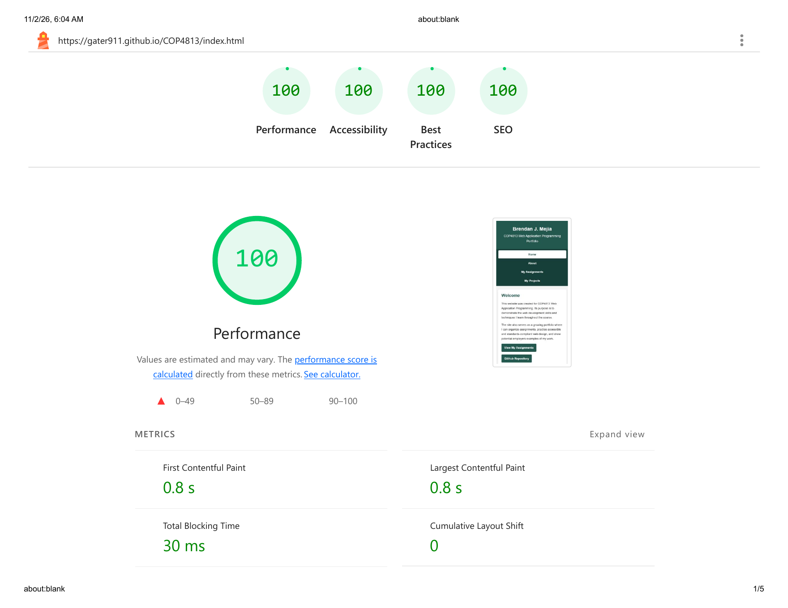
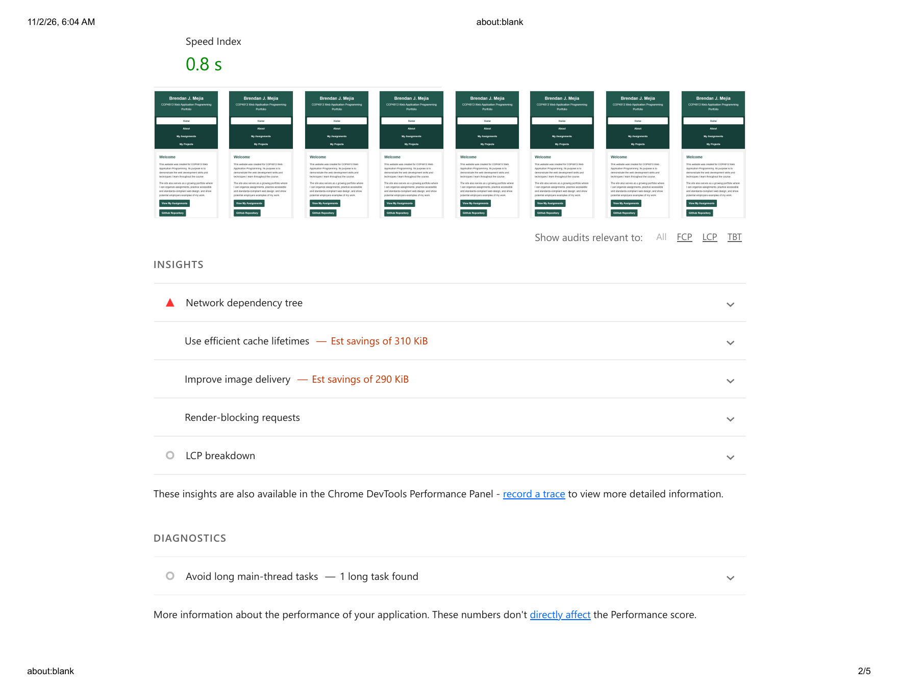
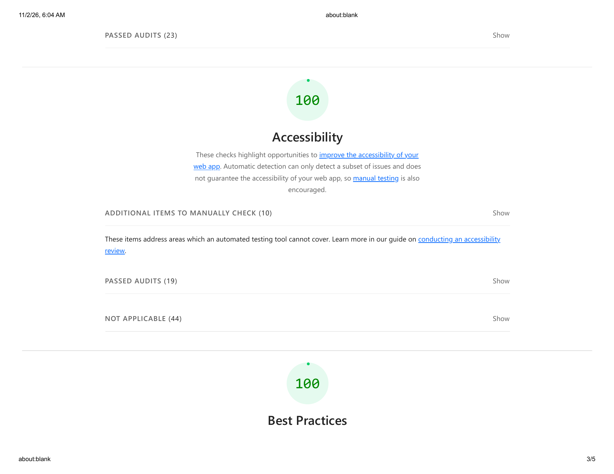
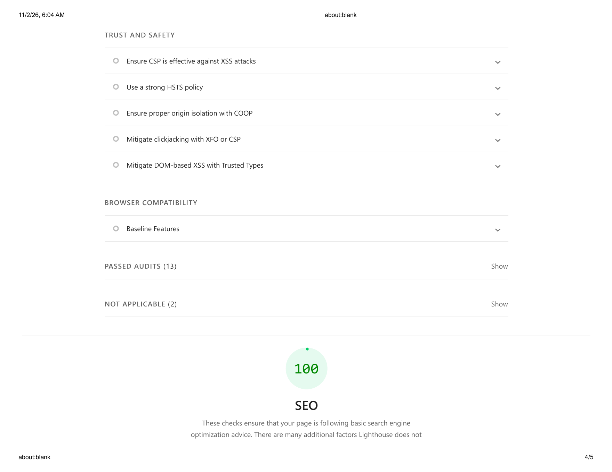
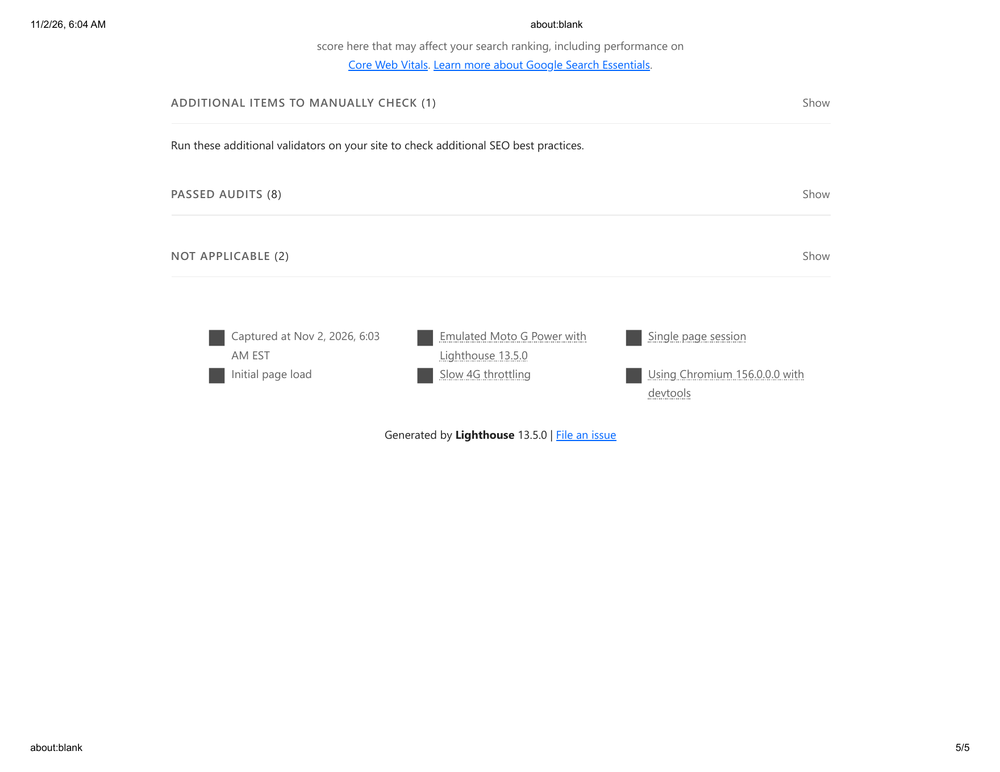

Mobile Readiness and Lighthouse Audit
For this assignment, I reviewed the mobile version of my COP4813 homepage and tested the published page using Google Lighthouse in Mobile Navigation mode. The homepage uses responsive CSS so the same content and navigation remain available while the layout adjusts to smaller screens.
The Lighthouse audit was run in an Incognito browser window on my published COP4813 homepage. Lighthouse emulated a Moto G Power device using Slow 4G throttling.
Mobile Interface
The homepage is designed to work on both desktop and mobile devices without requiring a separate mobile page. On smaller screens, the page content changes to a single-column layout, images scale within the available screen width, and the navigation remains available for touch interaction.
This allows the mobile version to provide the same primary features as the standard homepage while keeping the content readable and easy to navigate on a smaller display.
Overall Lighthouse Results
The Incognito Lighthouse test produced a score of 100 in every scored category. Running the audit in Incognito prevented browser extensions from interfering with the test and provided a cleaner measurement of the published homepage.

Performance Analysis
0.8 s
First Contentful Paint
0.8 s
Largest Contentful Paint
30 ms
Total Blocking Time
0
Cumulative Layout Shift
0.8 s
Speed Index
The homepage received a Performance score of 100. The page displayed its first content in 0.8 seconds, the largest visible content was also displayed in 0.8 seconds, and the Total Blocking Time was only 30 milliseconds. The Cumulative Layout Shift score was 0, which means the visible content remained stable while the page loaded.
Lighthouse still listed unscored improvement opportunities involving cache lifetimes and image delivery. The Reefside Reptiles logo is the largest downloaded resource, so using a more compressed image or a modern image format could reduce the amount of data transferred. These recommendations did not prevent the page from receiving a 100 Performance score.

Accessibility Analysis
The homepage received an Accessibility score of 100. The automated Lighthouse audit did not identify a scored accessibility failure. The report also lists items that should still be reviewed manually because automated testing cannot evaluate every part of accessibility.
The passed checks include areas such as alternate text for images, valid page language, sufficient color contrast, logical heading structure, touch-target size, a main landmark, and a focusable skip link.

Best Practices Analysis
The homepage received a Best Practices score of 100. The Lighthouse audit did not identify a scored Best Practices failure. The report also contains informational checks related to trust and safety, browser compatibility, and other web-development practices that can be considered as the website continues to grow.

SEO Analysis
The homepage received an SEO score of 100. Lighthouse found that the homepage met the basic search-engine optimization checks included in the audit. The report also notes that some SEO factors must be checked manually and that Lighthouse does not measure every factor that can affect search ranking.

Conclusion
The mobile Lighthouse test shows that the COP4813 homepage is performing well on a simulated mobile device. It received scores of 100 for Performance, Accessibility, Best Practices, and SEO. The responsive layout allows the same homepage to be used on desktop and mobile devices while adapting the content to the available screen size.
Although the audit produced perfect category scores, Lighthouse still identified optional performance improvements involving image size and caching. These can be considered in future updates, but they did not prevent the homepage from meeting the mobile-readiness goals of this assignment.